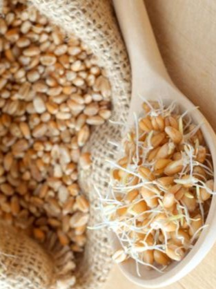

Características:
Entre los síntomas de esta alergia se puede encontrar la congestión nasal, estornudos y más.

Tipos de Gramíneas
Gramíneas:
Su nombre científico es Poaceae, aunque son mucho más conocidas por su nombre común: Gramíneas.
Como mencioné anteriormente, se trata de una gran familia de plantas con una gran cantidad de especies, siendo la mayoría de ellas herbáceas y realmente importantes para la economía del mundo.
Su gran importancia se debe a que buena parte de la alimentación humana se basa en ellas.
El consumo puede ser ya sea de forma directa, como en granos de cereales, harinas y aceites, o de forma indirecta, ya que se usan también gramíneas forrajeras para alimentar aves de corral y ganado en todo el mundo.
Características: